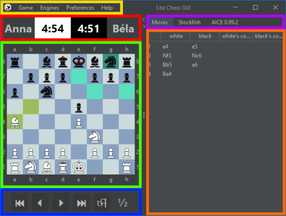
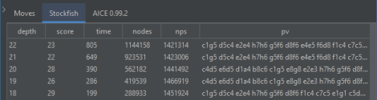

Grafikus felület
A menürendszer (sárga) segítségével kezelhetők a játszmák, az engine-ek, és személyre szabható az alkalmazás kinézete. Az felületnek két fő komponense van. Baloldalt a sakktábla (zöld), sakkóra (piros), és az eszköztár (kék), jobboldalt az információs panel látszik, melyben a különböző fülek (magenta) alatti táblázatban (narancs) megtekinthető a lépések listája, és az egyes sakk engine-ek kimenete.

Menürendszer
A menürendszerről bővebb tájékoztatást kaphat az alábbi oldalakon:
A sakk pontos szabályairól tájékozódhat a "Help > Laws of Chess" menüpont alatt.
Sakkóra
A sakkórán láthatja a játékosok neveit, és megmaradt idejüket. Az óra másodperc pontossággal mutatja az időt, ha a játékosnak több mint 10 másodperce maradt még. Ha ennél kevesebb ideje maradt, az óra tizedmásodperc pontosságra vált. Az óra a háttérszínével jelzi, hogy a sötét vagy a világos játékos idejét mutatja.
Sakktábla
A sakktábla mutatja a játékállást, színezett mezőkkel jelzi a sakkállást, utolsó lépés kezdő és cél mezejét és a kiválasztott bábu legális lépéseit.
A sakktábla személyreszabásáról, valamint lépés beviteléről az alábbi oldalakon tájékozódhat:
Eszköztár
Feladhatja a játszmát, vagy döntetlent igényelhet. Az alkalmazás lehetővé teszi, hogy a lépéseket visszapörgetve a parti egy korábbi állását megtekintse.
Az eszköztárról bővebben itt olvashat:
Információs panel
A panel fülei közül az első mindíg a lépések listája. Itt látható a körök sorszába, és sötét és világos lépései, táblázatos formában. A játékosok a lépésekhez kommenteket fűzhetnek. Ezt a "white's comment" vagy a "black's comment" oszlop megfelelő cellájára kattintva tehetik meg.
A panel többi füle alatt a betöltött engine-ek keresési eredményeik táblázatban olvashatók. Minden fül szövege megegyezik a hozzárendelt engine nevével. A táblázatban mindíg a legutoljára küldött eredmény van a legelső sorban. Az oszlopok a következőképpen értelmezendőek:
- depth: A keresés mélysége féllépésekben.
- score: Az állás értékelése "centipawn" mértékegységben. A "centipawn" egy gyalog századrészével azonos előnyt jelent. Ha pozitív, akkor az engine úgy gondolja, előnyben van, ha negatív akkor pedig hátrányban.
- time: A keresés kezdetétől számított idő millisecundum-ban.
- nodes: Az engine által megvizsgált lépéssorozatok száma.
- nps (nodes per second): A másodpercenként megvizsgált játékállások száma.
- pv (principal variation): A keresés aktuális eredménye. A legjobb lépéssorozat az engine értékelése szerint.